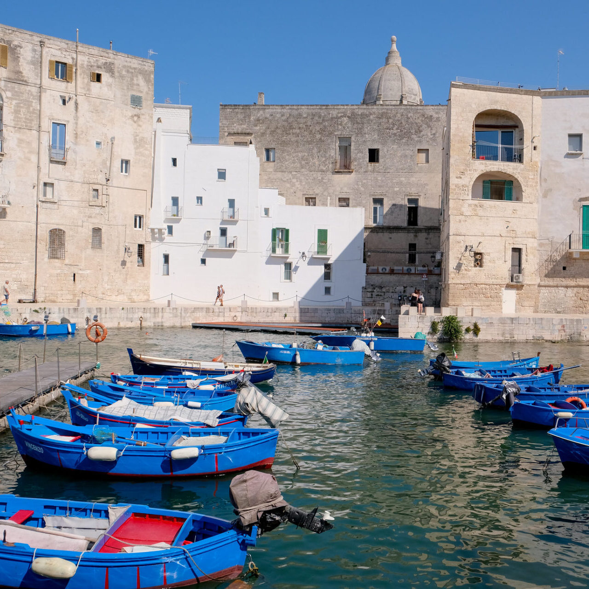
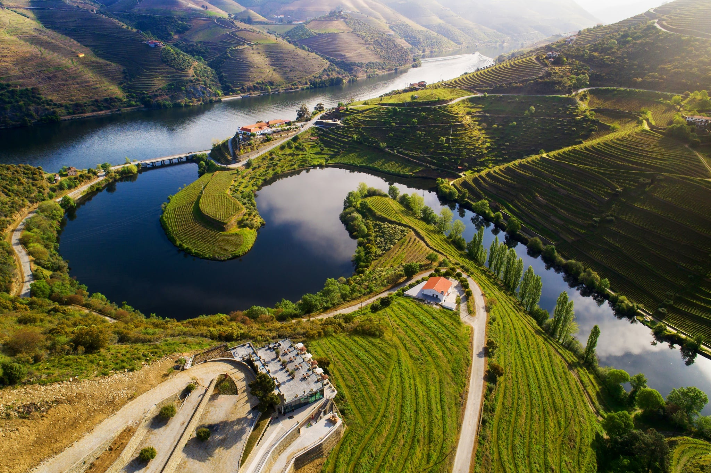
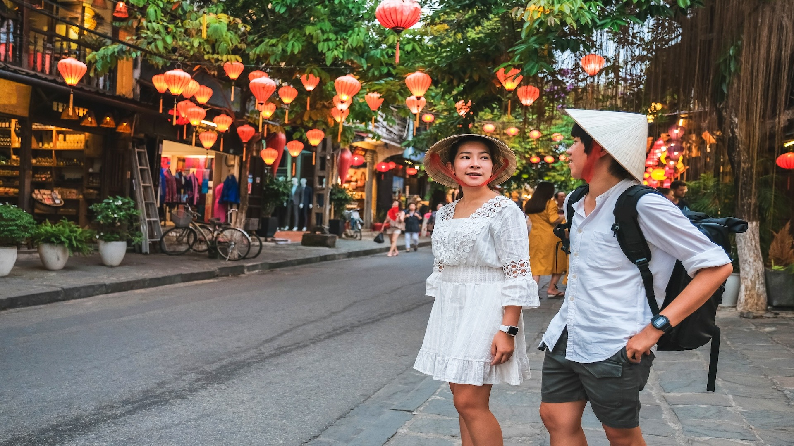
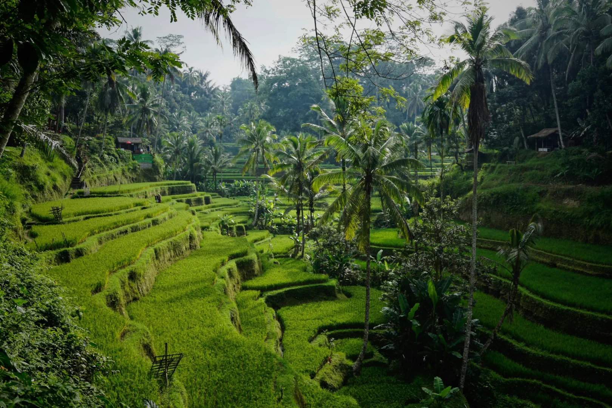
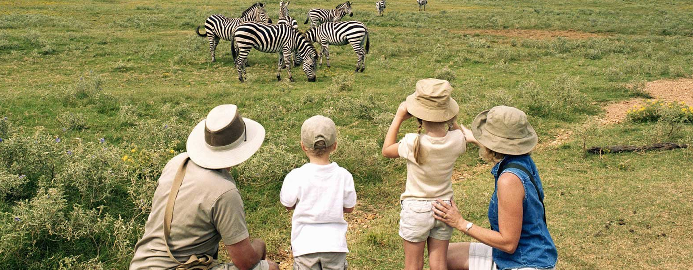
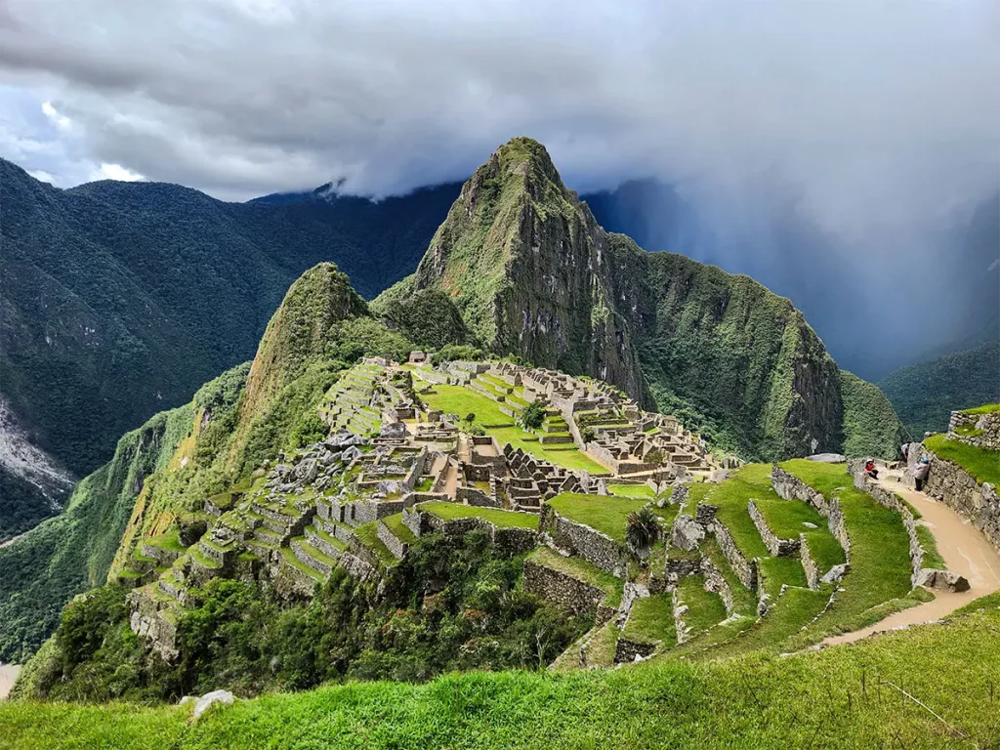
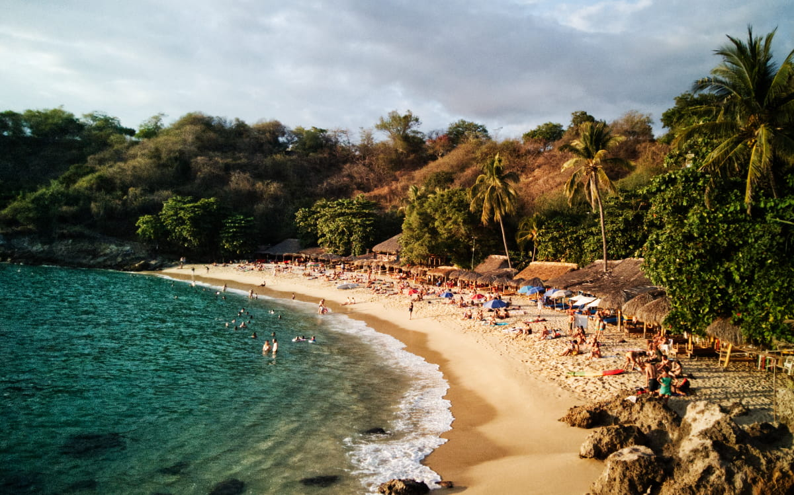
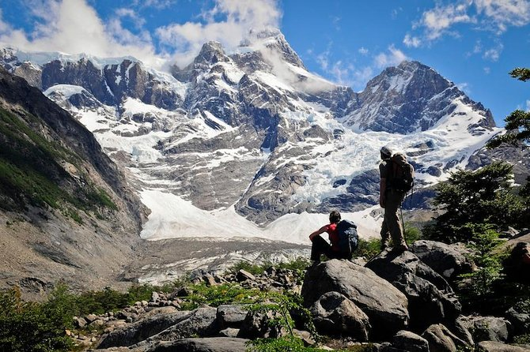
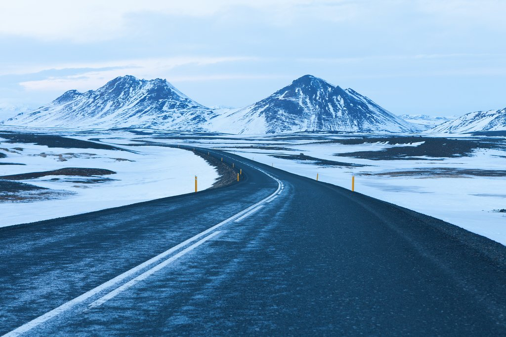

Santorini & Naxos
Caldera views without the cruise-ship crowds, plus a slower island most tourists skip.

Puglia Coastal Route
Whitewashed trulli towns and coastal towns most Italy itineraries never reach.

Douro Valley & Porto
Terraced vineyards, riverside quintas, and a food scene that outshines Lisbon's.

Kyoto & the Kii Peninsula
Temple towns and onsen villages along a pilgrimage trail few visitors hear about.

Hanoi to Hoi An
A north-to-south route timed around food markets, not just landmarks.

Bali's Quiet North
Rice-terrace villages and dive towns, away from the south coast crowds.

Marrakech & the Atlas
Riads in the medina, then two nights under the stars in the Sahara.

Serengeti & Zanzibar
A small-camp safari paired with a slow finish on the coast.

Sacred Valley & Machu Picchu
Altitude-paced itinerary that gets you acclimated before the trek, not after.

Oaxaca & the Coast
Mezcal villages inland, then a quiet stretch of Pacific coastline.

Patagonia Trekking Route
Torres del Paine paced for hikers who want real trail days, not bus-window views.

Ring Road & Westfjords
The full loop, plus a detour into the fjords most tours cut for time.